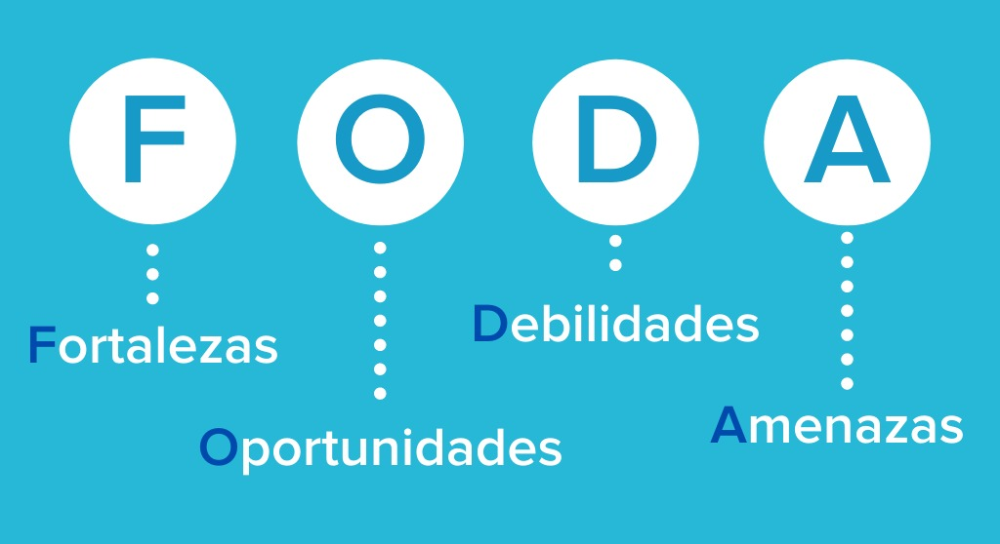
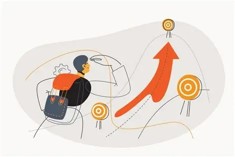

MISIÓN: Transformar alimentos estéticamente imperfectos en snacks saludables y 100% naturales mediante procesos sostenible, reduciendo el desperdicio de comida, apoyando el comercio justo con los agricultores locales y promoviendo hábitos de consumo responsables con el medio ambiente.
VISIÓN: Ser la marca líder de snacks sostenibles en América para el año 2030, reconocida por revolucionar la industria alimentaria a través de la economía circular, la innovación ecológica y el impacto positivo constante en el planeta y las comunidades agrícolas.
Fortalezas: La fruta estéticamente fea es más económica, lo que reduce costos de producción. Este punto tiene un impacto social positivo, lo cual es muy bueno para los consumidores actuales.
Oportunidades: El mercado de productos saludables y ecológicos está en pleno desarrollo. Hay oportunidaes de crear alianzas con mercados locales y supermercados para que nos provean esa fruta antes de que se eche a perder.
Debilidades: La producción puede ser inestable porque dependemos totalmente de qué frutas sean rechazadas cada semana.
Amenazas: Mucha competencia de marcas de snacks. Existe la posibilidad de que los mismos supermercados decidan aprovechar esa fruta para hacer sus propios jugos o alimentos preparados.

La empresa se alinea directamente con el ODS 12: Producción y Consumo Responsables. ECOFOOD trata con la problemática mundial del desperdicio de comida. Al rescatar las frutas que el mercado rechaza por ser estéticamente feas, evitamos que terminen en la basura y generen contaminación. Así, promovemos un modelo de economía donde se aprovecha todo y se reduce la huella ecológica.

¡Claro que puedes! Hay dos formas en las cuales puedes ayudar a ECOOFOOD:
Asi es, puedes comprar o donar.